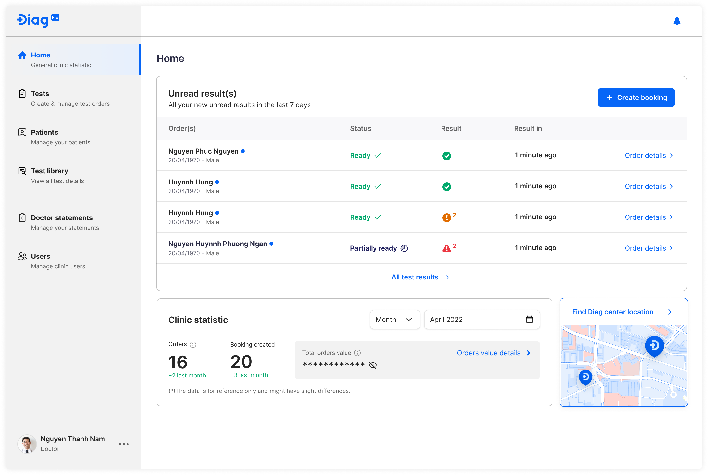
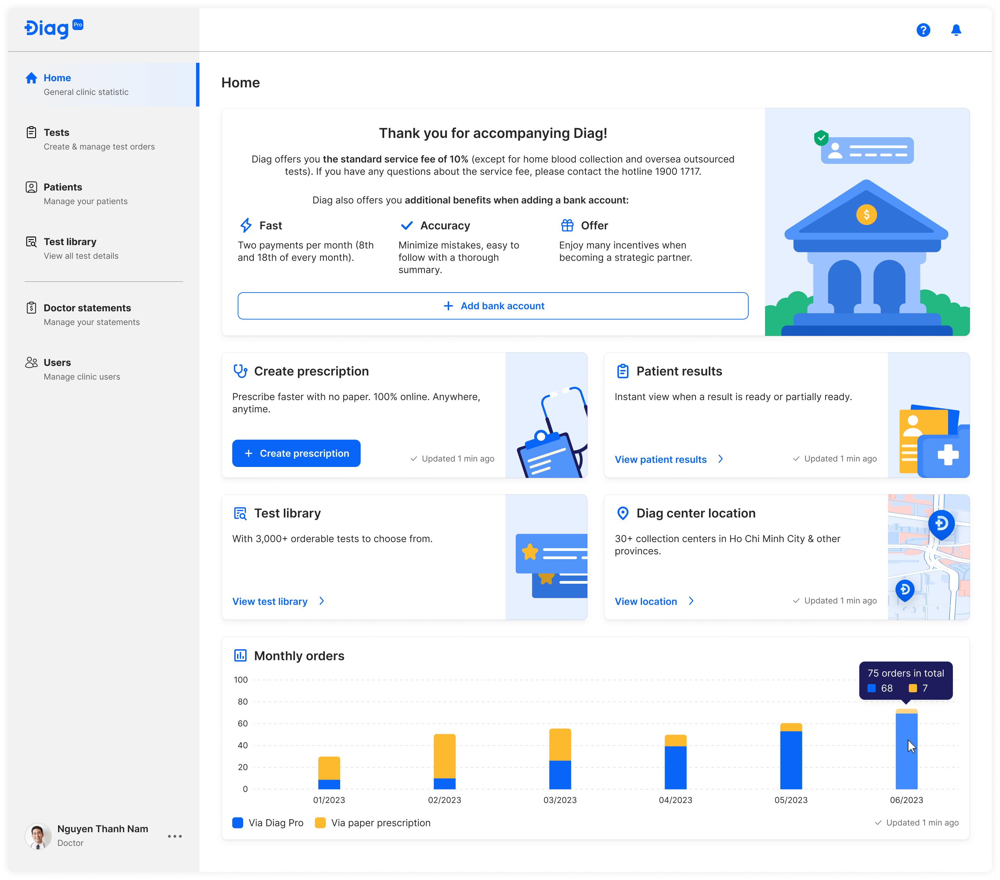

Case Study | Improving the Doctor Web Portal to enhance learnability and work proficiency.
ROLE:
UX Designer
TIMELINE:
April - June, 2023
DELIVERABLES:
Website Design
Introduction
A few years ago, Diag Pro was a tool that doctors
collaborating with Diag used to view patients' test results only. Over
time, due to real needs of doctors, Diag has been introducing more
features. Until now, doctors can:
• Give test orders (or prescriptions) to patients online.
• View patient results online.
• Check the test library when consulting patients online.
• View created orders (prescriptions) of every month online.
The Problem
In March 2023, the product owner reviewed data from Mix Panel and made an interesting discovery: "70% of doctors created their first digital test order for a patient one month after being onboarded by the sales team of Diag. However, at that time, the doctors barely remembered how to do so."- whispered by the product owner.
With this insight in mind, the Customer Success team met with doctors to learn more about their problems and needs. During these meetings, doctors expressed their concerns: “We are unsure of how to create new orders for patients and use other features. We have no time to explore these features because we are always busy with patients. Therefore, we prefer to give test orders on paper instead.”
Goal
Based on these insights, the product team has decided to improve the website's user experience for doctors who use the website infrequently or for the first time. The following are the specific goals:
For product:
• Making the homepage more intuitive and interesting for doctors when
they log in for the first time so that they can easily use any function
without hesitation.
For Business:
• Attracting more doctors to join Diag by improving the service and
tool.
• Encouraging more doctors to use the website instead of handwritten
methods.
Design process
1. Design process
Step 1: Discussed with Product team to understand the
problem.
Step 2: Determined user user personas.
Step 3: Ideated and conducting the secondary research.
Step 4: Created lo-fi wireframes, presenting them to
the entire product team, and gathering feedback.
Step 5: Created mockups and handing them off to the
Scrum team. Meanwhile, following up and troubleshooting any abrupt
problems.
Step 6: Reviewed the UI after the feature has been
deployed.
2. Final Design
Before:
After:
Result
The recent design improvements have garnered positive feedback from both the internal and external members of the product team.
However, to ensure continued success, it is essential to maintain close communication with doctors and receive their valuable feedbacks. By actively listening to their insights and incorporating their suggestions, we can further enhance the design to better meet their needs and expectations. Continuous improvement is key to delivering an exceptional user experience for our product.